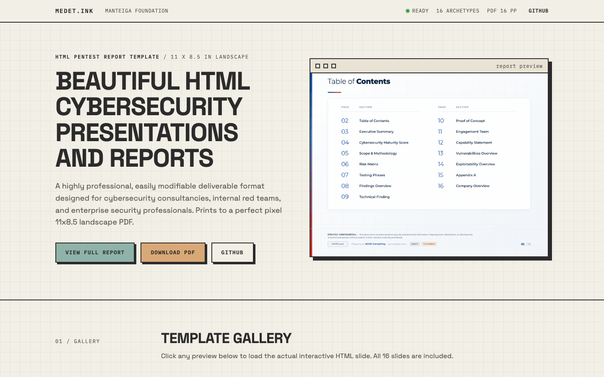
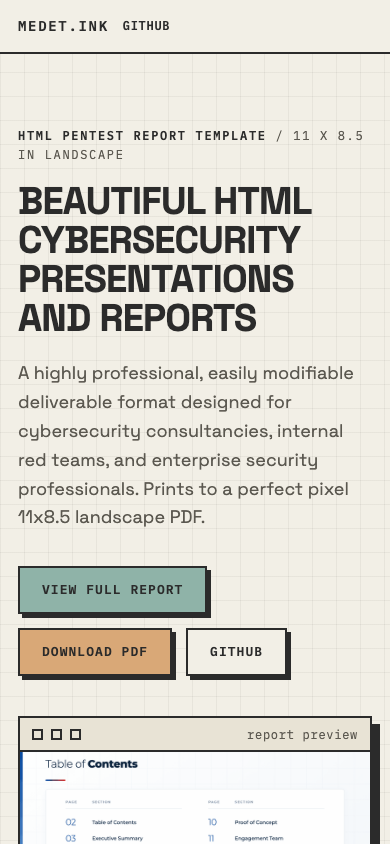
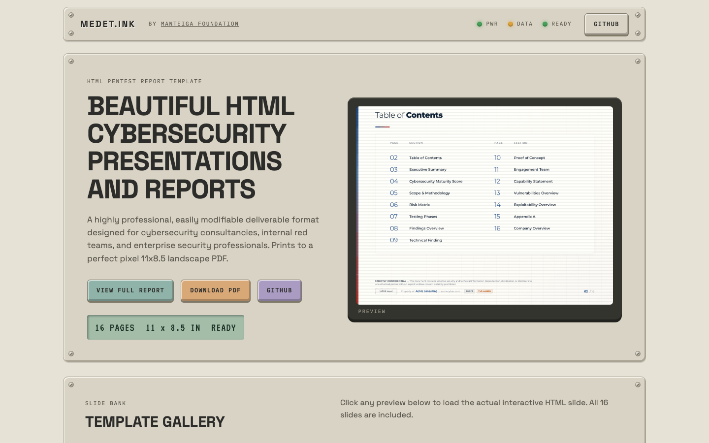
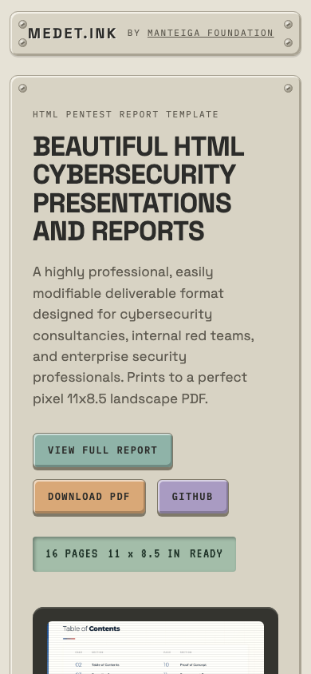
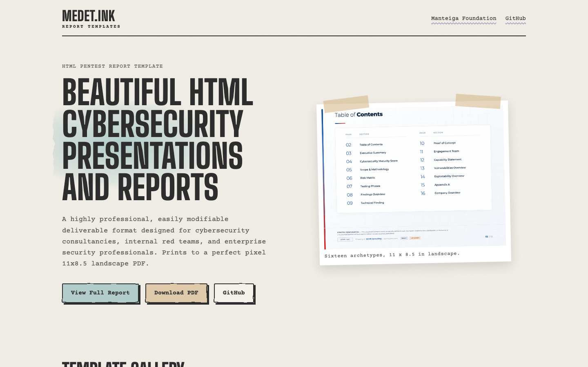
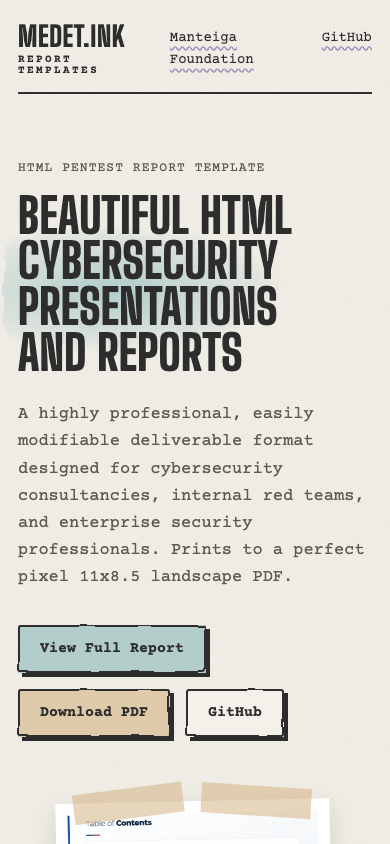

The current landing page's content and copy, unchanged, in three directions taken from the two style references.
Each image shows the first screen at 1440 x 900 and at 390 x 844 (phone). Open a live page to scroll the whole design.
Write-up: docs/spikes/002-landing-style.md.
The references' palette and type on today's layout: cream paper with a faint grid, charcoal ink, monospace labels, bold uppercase headings, hard offset shadows, an LED status in the slim navigation band. Features become a spec sheet instead of icon tiles. The most executive-ready of the three.


Open option AThe page as an instrument: bevelled panels with screws, LED indicators, bevelled keycap buttons, the demo on an LCD screen with scanlines, the gallery as a bank of small monitors, the features as modules.


Open option BPaper grain, hand-drawn ink borders, watercolour washes behind the headings, the demo taped to the page, slides framed as postage stamps, typewriter text and a tall condensed wordmark.


Open option C